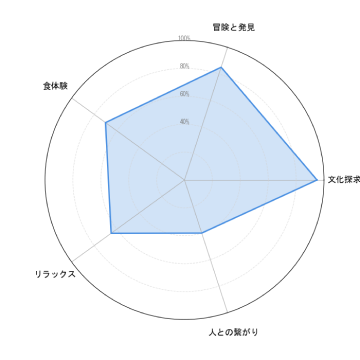

Your browser does not support the video tag.
旅は真の知識の大きな泉である
ベンジャミン・ディズレーリ
Scroll to continue
Your browser does not support the video tag.
目的地というものは決して場所ではなく、
物事の新しい見方である。
ヘンリー・ミラー
Your browser does not support the video tag.
Enter
Click enter to continue
ホーム
保存
発見
ホーム
新しいチャット
チャット
海外旅行おすすめ
19°
Your browser does not support the video tag.
Profile
×
Alex28
[✓ DID Verified]
